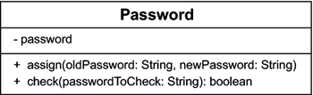
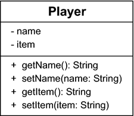
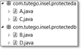

5.2 Privatsphäre und Sichtbarkeit
Innerhalb einer Klasse sind alle Methoden und Attribute für die Methoden sichtbar. Damit die Daten und Methoden einer Klasse vor externem Zugriff geschützt oder ausdrücklich für andere wiederum als öffentlich sichtbar markiert sind, gibt es unterschiedliche Sichtbarkeiten:
- öffentlich
- geschützt
- paketsichtbar
- privat
Für drei Sichtbarkeiten gibt es Schlüsselwörter, die Sichtbarkeitsmodifizierer. In diesem Abschnitt sollen die Sichtbarkeiten public (öffentlich), private (privat) und paketsichtbar (ohne Modifizierer) erklärt werden; zu protected (geschützt) kommen wir in Abschnitt 5.8 beim Thema Vererbung zurück.
5.2.1 Für die Öffentlichkeit: public
Der Sichtbarkeitsmodifizierer public an Klassen, Konstruktoren, Methoden und sonstigen Klassen-Innereien bestimmt, dass alle diese markierten Elemente von außen für jeden sichtbar sind. Es spielt dabei keine Rolle, ob sich der Nutzer im gleichen oder in einem anderen Paket befindet.
Ist zwar die Klasse public, aber eine Eigenschaft privat, kann eine fremde Klasse dennoch nicht auf die Eigenschaft zurückgreifen. Und ist eine Eigenschaft public, aber die Klasse privat, dann kann eine andere Klasse erst gar nicht an diese Eigenschaft »herankommen«.
5.2.2 Kein Public Viewing – Passwörter sind privat
Der Sichtbarkeitsmodifizierer private verbietet allen von außen zugreifenden Klassen den Zugriff auf Eigenschaften. Das wäre etwa für eine Klasse wichtig, die Passwörter speichern möchte. Dafür wollen wir eine öffentliche Klasse Password mit einem privaten Attribut password deklarieren. Eine öffentliche Methode assign() soll eine Änderung des Passwortes zulassen, wenn das alte Passwort bekannt ist, und eine weitere öffentliche Methode check() erlaubt das Prüfen eines Passwortes. Am Anfang ist das Passwort der leere String:
Listing 5.10: Password.java
public class Password
{
private String password = "";
public void assign( String oldPassword, String newPassword )
{
if ( password.equals(oldPassword) && newPassword != null )
{
password = newPassword;
System.out.println( "Passwort gesetzt." );
}
else
System.out.println( "Passwort konnte nicht gesetzt werden." );
}
public boolean check( String passwordToCheck )
{
return password.equals( passwordToCheck );
}
}
Wir sehen, dass öffentliche Objektmethoden ganz selbstverständlich auf das private-Element ihrer Klasse zugreifen können.
Abbildung 5.7: In der UML werden private Eigenschaften mit einem führenden Minus gekennzeichnet.
Eine zweite Klasse PasswordDemo will nun auf das Passwort von außen zugreifen:
Listing 5.11: PasswordDemo.java, main()
Password pwd = new Password();
pwd.assign( "", "TeutoburgerWald" );
pwd.assign( "TeutoburgerWald", "Doppelkeks" );
pwd.assign( "Dopplerkeks", "panic" );
// System.out.println( pwd.password ); // The field Password.password is not visible
Die Klasse Password enthält den privaten String password, und dieser kann nicht referenziert werden. Der Compiler erkennt zur Übersetzungs- beziehungsweise Laufzeit Verstöße und meldet diese.


Abbildung 5.8: Bei einem durch die falsche Sichtbarkeit verursachten Fehler bietet Eclipse mit  +
+  eine Änderung der Sichtbarkeit an.
eine Änderung der Sichtbarkeit an.
Allerdings wäre es manchmal besser, wenn der Compiler uns nicht verriete, dass das Element privat ist, sondern einfach nur melden würde, dass es dieses Element nicht gibt.
5.2.3 Wieso nicht freie Methoden und Variablen für alle?
Private Methoden und Variablen dienen in erster Linie dazu, den Klassen Modularisierungsmöglichkeiten zu geben, die von außen nicht sichtbar sein müssen. Zwecks Strukturierung werden Teilaufgaben in Methoden gegliedert, die aber von außen nie allein aufgerufen werden dürfen. Daav die Implementierung versteckt wird und der Programmierer vielleicht nur eine Zugriffsmethode sieht, wird auch der Terminus »Data Hiding« verwendet. Wer wird schon einem Fremden die Geheimzahl der Kreditkarte geben oder verraten, mit wem er die letzte Nacht verbracht hat? Oder nehmen wir zum Beispiel ein Radio: Von außen bietet es die Methoden an(), aus(), lauter() und leiser() an, aber welche physikalischen Vorgänge ein Radio dazu bringen, Musik zu spielen, das ist eine ganz andere Frage, für die wir uns als gewöhnliche Benutzer eines Radios nicht interessieren.
5.2.4 Privat ist nicht ganz privat: Es kommt darauf an, wer’s sieht *
Private Eigenschaften sind nur für andere Klassen privat, aber nicht für die eigene, auch wenn die Objekte unterschiedlich sind. Das ist eine Art Spezialfall, dass über eine Referenzvariable der Zugriff auf eine private Eigenschaft eines anderen Objekts erlaubt ist:
Listing 5.12: Key.java
public class Key
{
private int id;
public Key( int id )
{
this.id = id;
}
public boolean compare( Key that )
{
return this.id == that.id;
}
}
Die Methode compare() der Klasse Key vergleicht das eigene Attribut this.id mit dem Attribut des als Argument übergebenen Objekts that.id. Zwar wäre this nicht nötig, doch verdeutlicht es schön das eigene und das fremde Objekt. An dieser Stelle sehen wir, dass der Zugriff auf that.id zulässig ist, obwohl id privat ist. Dieser Zugriff ist aber erlaubt, da die compare()-Methode in der Key-Klasse deklariert und der Parameter ebenfalls vom Typ Key ist. Mit Unterklassen (siehe Abschnitt 5.8.1, »Vererbung in Java«) funktioniert das schon nicht mehr. Private Attribute und Methoden sind also gegen Angriffe von außerhalb der deklarierenden Klasse geschützt.
5.2.5 Zugriffsmethoden für Attribute deklarieren
Attribute sind eine tolle und notwendige Sache. Allerdings ist zu überlegen, ob der Nutzer eines Objekts immer direkt auf die Attribute zugreifen sollte oder ob dies problematisch ist:
- Bei manchen Variablen gibt es Wertebereiche, die einzuhalten sind. Das Alter eines Spielers kann nicht kleiner null sein, und Menschen, die älter als zweihundert Jahre sind, werden nur in der Bibel genannt. Wenn wir das Alter privat machen, kann eine Zugriffsmethode wie setAge(int) mithilfe einer Bereichsprüfung nur bestimmte Werte in die Objektvariable übertragen und den Rest ablehnen. Die öffentliche Methode getAge() gibt dann Zugriff auf die Variable.
- Mit einigen Variablen sind Abhängigkeiten verbunden. Wenn zum Beispiel ein Spieler ein Alter hat, kann der Spieler gleichzeitig eine Wahrheitsvariable für die Volljährigkeit deklarieren. Natürlich gibt es nun eine Abhängigkeit. Ist der Spieler älter als 18, soll die Wahrheitsvariable auf true stehen. Diese Abhängigkeit lässt sich mit zwei öffentlichen Variablen nicht wirklich erzwingen. Eine Methode setAge(int) kann jedoch bei privaten Attributen diese Konsistenz einhalten.
- Gibt es Zugriffsmethoden, so lassen sich dort leicht Debug-Breakpoints setzen. Auch lassen sich die Methoden so erweitern, dass der Zugriff geloggt (protokolliert) wird oder die Rechte des Aufrufers geprüft werden.
- Bei Klassen gilt das Geheimnisprinzip. Obwohl es vorrangig für Methoden gilt, sollte es auch für Variablen gelten. Möchten Entwickler etwa ihr internes Attribut von int auf BigInteger ändern und damit beliebig große Ganzzahlen verwalten, hätten wir ein beträchtliches Problem, da an jeder Stelle des Vorkommens ein Objekt eingesetzt werden müsste. Wollten wir zwei Variablen einführen – ein int, damit die alte, derzeit benutzte Software ohne Änderung auskommt, und ein neues BigInteger – hätten wir ein Konsistenzproblem.
- Nicht immer müssen dem Aufrufer haarklein alle Eigenschaften angeboten werden. Der Nutzer möchte sogenannte höherwertige Dienste vom Objekt angeboten bekommen, sodass der Zugriff auf die unteren Attribute vielleicht gar nicht nötig ist.
5.2.6 Setter und Getter nach der JavaBeans-Spezifikation
Wir sehen an diesen Beispielen, dass es gute Gründe dafür gibt, Attribute zu privatisieren und öffentliche Methoden zum Lesen und Schreiben anzubieten. Weil diese Methoden auf die Attribute zugreifen, nennen sie sich auch Zugriffsmethoden. Für jedes Attribut wird eine Schreib- und Lesemethode deklariert, für die es auch ein festes Namensschema laut JavaBeans-Konvention gibt. Die Zugriffsmethoden machen dabei eine Property zugänglich. Für eine Property »name« und den Typ String gilt zum Beispiel:
- String getName(): Die Methode besitzt keine Parameterliste, und der Rückgabetyp ist String.
- void setName(String name): Die Methode hat keine Rückgabe, aber genau einen Parameter.
Die getXXX()-Methoden heißen Getter, die setXXX()-Methoden Setter. Die Methoden sind öffentlich, und der Typ der Getter-Rückgabe muss der gleiche wie der Parametertyp vom Setter sein.
Bei boolean-Attributen darf es (und muss es in manchen Fällen auch) statt getXXX() alternativ isXXX() heißen. Da die Programmentwicklung in der Regel mit englischen Bezeichnernamen erfolgt, kommt es nicht zu unschönen Bezeichnernamen à la getGegenstand() oder isVolljährig().
| Sprachenvergleich |
|
Während in Java Methoden, die ein boolean liefern, immer mit dem Präfix is beginnen, schließt bei Ruby ein Fragezeichen den Methodennamen ab. So liefert "".empty? wahr und "java".equal? "ruby" falsch.[130](Klammern bei Methodenaufrufen sind optional. Weiterhin gilt: In Java testet der ==-Operator die Identität und equals() die Gleichheit. In Ruby ist das genau anders herum: == testet auf Gleichheit und equal? auf Identität. Und dazu kommt noch die Methode eq?, die testet, ob zwei Objekte die gleichen Werte haben und vom gleichen Typ sind.) Das ist eine übliche Konvention in Ruby und zeigt außerdem, dass andere Programmiersprachen mit den erlaubten Bezeichnern großzügiger sind. |
Zugriffsmethoden für den Spieler
Das folgende Beispiel soll einen Spieler umsetzen, bei dem der Name und der Gegenstand privat und hübsch durch Zugriffsmethoden abgesichert sind. Eine Konsistenzprüfung soll verhindern, dass ein String null oder leer ist:
Listing 5.13: com/tutego/insel/game/v5/Player.java, Player
public class Player
{
private String name = "";
private String item = "";
public String getName()
{
return name;
}
public void setName( String name )
{
if ( name != null && !name.trim().isEmpty() )
this.name = name;
}
public String getItem()
{
return item;
}
public void setItem( String item )
{
if ( item != null && !item.trim().isEmpty() )
this.item = item;
}
}
Es muss keine gute Idee sein, sich bei ungültigen Werten taub zu stellen; eine Alternative besteht darin, zu loggen oder etwa in Form einer Ausnahme (Exception) unerwünschte Werte zu melden.
Abbildung 5.9: Player-Klasse mit Setter/Getter
Der Nutzer der Klasse muss wegen der Methodenaufrufe etwas mehr schreiben:
Listing 5.14: com/tutego/insel/game/v5/Playground.java
Player spongebobby = new Player();
spongebobby.setName( "Spongebobby" );
spongebobby.setItem( "Schnecke" );
Wird später bei der Weiterentwicklung des Programms eine Änderung notwendig, wenn etwa die Gegenstände anders gespeichert werden sollen, kann der Typ der internen Variablen geändert werden, und die Welt draußen bekommt davon nichts mit. Lediglich intern in den Gettern und Settern ändert sich etwas, aber nicht an der Schnittstelle.
Eclipse bietet zwei Möglichkeiten, Setter und Getter automatisch zu generieren. Das
Kontextmenü unter Source • Generate Getters and Setters... fördert ein Dialogfenster zutage, mit dem Eclipse automatisch die setXXX()- und getXXX()-Methoden einfügen kann. Die Attribute, für die eine Zugriffsmethode gewünscht ist,
werden selektiert. Die zweite Möglichkeit funktioniert nur für genau ein Attribut:
Steht der Cursor auf der Variablen, liefert Refactor • Encapsulate Field... einen Dialog, mit dem zum einen Setter und Getter generiert werden und zum anderen
die direkten Zugriffe auf das Attribut in Methodenaufrufe umgewandelt werden.
5.2.7 Paketsichtbar
Die Sichtbarkeiten public und private sind Extreme. Steht kein ausdrücklicher Sichtbarkeitsmodifizierer an den Eigenschaften, gilt die Paketsichtbarkeit. Sie sagt aus, dass die paketsichtbaren Klassen nur von anderen Klassen im gleichen Paket gesehen werden können. Für die Eigenschaften gilt das Gleiche: Nur Typen im gleichen Paket sehen die paketsichtbaren Eigenschaften.
Dazu einige Beispiele: Zwei Klassen, A und B, befinden sich in unterschiedlichen Paketen. Die Klasse A ist nicht öffentlich:
Abbildung 5.10: Vier Klassen, verteilt auf zwei Pakete, für das Beispiel
Listing 5.15: com/tutego/insel/protecteda/A.java
package com.tutego.insel.protecteda;
class A
{
}
Die Klasse B versucht, sich auf A zu beziehen, doch funktioniert das wegen der »Unsichtbarkeit« von A nicht – es gibt einen Compilerfehler:
Listing 5.16: com/tutego/insel/protectedb/B.java
package com.tutego.insel.protectedb;
class B
{
A a; //A cannot be resolved to a type
}
Ist eine Klasse C öffentlich, aber die Klasse deklariert ein nur paketsichtbares Attribut c, dann kann eine Klasse in einem anderen Paket das Attribut nicht sehen, auch wenn sie die Klasse selbst sehen kann:
Listing 5.17: com/tutego/insel/protecteda/C.java
package com.tutego.insel.protecteda;
public class C
{
static int c;
}
Und dies ist die Klasse D:
Listing 5.18: com/tutego/insel/protectedb/D.java
package com.tutego.insel.protectedb;
import com.tutego.insel.protecteda.C;
class D
{
int d = C.c; //
}
Paketsichtbare Eigenschaften sind sehr nützlich, weil sich damit Gruppen von Typen bilden lassen, die gegenseitig Teile ihres Innenlebens kennen. Von außerhalb des Pakets ist der Zugriff auf diese Teile dann untersagt, analog zu private. Dazu ein Beispiel für unsere Spielerklasse: Nutzt der Player zum Beispiel intern eine Hilfsklasse, etwa zur Speicherung der Gegenstände, so kann diese paketsichtbare Speicherklasse für Außenstehende unsichtbar bleiben.
5.2.8 Zusammenfassung zur Sichtbarkeit
In Java gibt es vier Sichtbarkeiten und dafür drei Sichtbarkeitsmodifizierer:
- Öffentliche Typen und Eigenschaften deklariert der Modifizierer public. Die Typen sind überall sichtbar, also kann jede Klasse und Unterklasse aus einem beliebigen anderen Paket auf öffentliche Eigenschaften zugreifen. Die mit public deklarierten Methoden und Variablen sind überall dort sichtbar, wo auch die Klasse sichtbar ist. Bei einer unsichtbaren Klasse sind auch die Eigenschaften unsichtbar.
- Der Modifizierer private ist bei Typdeklarationen seltener, da er sich nur dann einsetzen lässt, wenn in einer Kompilationseinheit (also einer Datei) mehrere Typen deklariert werden. Derjenige Typ, der den Dateinamen bestimmt, kann nicht privat sein, doch andere Typen (und innere Klassen) dürfen unsichtbar sein – nur der sichtbare Typ kann sie dann verwenden. Die mit private deklarierten Methoden und Variablen sind nur innerhalb der eigenen Klasse sichtbar. Eine Ausnahme bilden innere Klassen, die auch auf private Eigenschaften der äußeren Klasse zugreifen können. Wenn eine Klasse erweitert wird, sind die privaten Elemente für Unterklassen nicht sichtbar.
- Während private und public Extreme darstellen, liegt die Paketsichtbarkeit dazwischen. Sie ist die Standard-Sichtbarkeit und kommt ohne Modifizierer aus. Paketsichtbare Typen und Eigenschaften sind nur für die Klassen aus dem gleichen Paket sichtbar, also weder für Klassen noch für Unterklassen aus anderen Paketen.
- Der Sichtbarkeitsmodifizierer protected hat eine Doppelfunktion: Zum einen hat er die gleiche Bedeutung wie Paketsichtbarkeit, und zum anderen gibt er die Elemente für Unterklassen frei. Dabei ist es egal, ob die Unterklassen aus dem eigenen Paket stammen (hier würde ja die Standard-Sichtbarkeit reichen) oder aus einem anderen Paket. Eine Kombination aus private protected wäre wünschenswert, um die Eigenschaften nur für die Unterklassen sichtbar zu machen und nicht gleich für die Klassen aus dem gleichen Paket.[131](Die Java Programmers’ FAQ (http://groups.google.com/group/comp.lang.java.programmer/ browse_thread/thread/5f5ae8700cc63291/977b7eddd7064217) führt aus: »It first appeared in JDK 1.0 FCS (it had not been in the Betas). Then it was removed in JDK 1.0.1. It was an ugly hack syntax-wise, and it didn’t fit consistently with the other access modifiers. It never worked properly: in the versions of the JDK before it was removed, calls to private protected methods were not dynamically bound, as they should have been. It added very little capability to the language. It’s always a bad idea to reuse existing keywords with a different meaning. Using two of them together only compounds the sin. The official story is that it was a bug. That’s not the full story. Private protected was put in because it was championed by a strong advocate. It was pulled out when he was overruled by popular acclamation.«)
| Eigenschaft ist | Sieht eigene Klasse | Sieht Klasse im gleichen Paket |
Sieht Unterklasse im anderen Paket | Sieht Klasse in anderem Paket |
| public | ja | ja | ja | ja |
| protected | ja | ja | ja | nein |
| paketsichtbar | ja | ja | nein | nein |
| private | ja | nein | nein | nein |
Der Einsatz der Sichtbarkeitsstufen über die Schlüsselwörter public, private und protected und den Standard »paketsichtbar« ohne explizites Schlüsselwort sollte überlegt erfolgen. Die objektorientierte Programmierung zeichnet sich durch überlegten Einsatz von Klassen und deren Beziehungen aus. Am besten ist die restriktivste Beschreibung; also nie mehr Öffentlichkeit als notwendig. Das hilft, die Abhängigkeiten zu minimieren und später Inneres einfacher zu verändern.
Sichtbarkeit in der UML *
Für die Sichtbarkeit von Attributen und Operationen sieht die UML diverse Symbole vor, die vor die jeweilige Eigenschaft gesetzt werden:
| Symbol | Sichtbarkeit |
| + | Öffentlich |
| – | Privat |
| # | geschützt (protected) |
| ~ | Paketsichtbar |
| Hinweis |
|
Wenn in der UML kein Sichtbarkeitsmodifizierer steht, so bedeutet das nicht »paketsichtbar«. Es heißt nur, dass dies noch nicht definiert ist. |
Reihenfolge der Eigenschaften in Klassen *
Verschiedene Elemente einer Klasse müssen in einer Klasse untergebracht werden. Eine verbreitete Reihenfolge ist die Aufteilung in Sektionen:
- Klassenvariablen
- Objektvariablen
- Konstruktoren
- statische Methoden
- Setter/Getter
- beliebige Objektmethoden
Innerhalb eines Blocks werden die Informationen oft auch bezüglich ihrer Zugriffsrechte sortiert. Am Anfang stehen sichtbare Eigenschaften und tiefer private. Der öffentliche Teil befindet sich deswegen am Anfang, da wir uns auf diese Weise schnell einen Überblick verschaffen können. Der zweite Teil ist dann nur noch für die erbenden Klassen interessant, und der letzte Teil beschreibt allein geschützte Informationen für die Entwickler. Die Reihenfolge kann aber problemlos gebrochen werden, indem private Methoden hinter öffentlichen stehen, um zusammenhängende Teile auch zusammenzuhalten.
| Codestil |
|
Quellcode sollte immer mit Leerzeichen statt mit Tabulatoren eingerückt werden. Zwei oder vier Leerzeichen sind oft anzutreffen. Viele Entwickler setzen die öffnende geschweifte Klammer für den Beginn eines Blocks gerne alleinstehend in die nächste Zeile. In Eclipse und NetBeans kann ein Code-Formatierer den Quellcode automatisch korrigieren. |
Ihr Kommentar
Wie hat Ihnen das <openbook> gefallen? Wir freuen uns immer über Ihre freundlichen und kritischen Rückmeldungen.
 Jetzt bestellen
Jetzt bestellen


{kind=link}
{kind=link}
{kind=link}